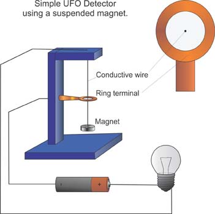
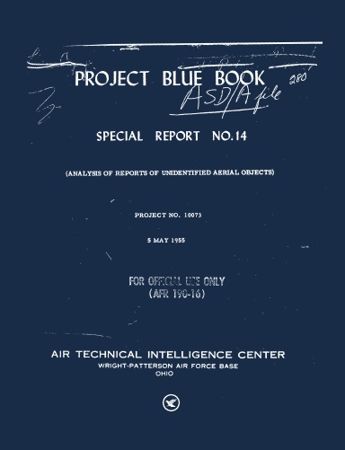
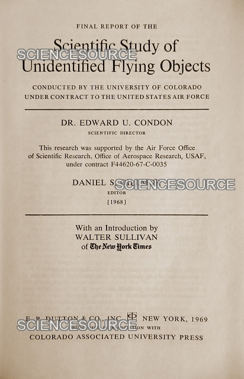
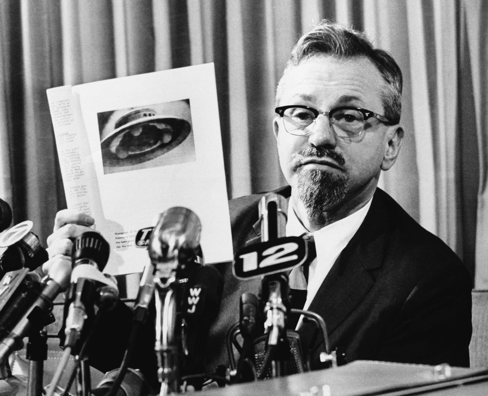

El Avrocar VZ-9AV en pruebas de vuelo (1959). Financiado por la USAF y el Ejército de EE.UU. como prototipo de aeronave de disco con propulsión por cojín de aire.
Fuente: National Museum of the USAF / media.defense.gov
En la segunda parte de nuestra lectura del informe de inteligencia australiano de 1971, examinamos las dos piezas de evidencia que Turner usa para sostener que EE.UU. no solo conocía el fenómeno, sino que lo estaba copiando: el proyecto Avrocar y los 46 programas de investigación en antigravedad. Y la tabla estadística que enterraron para cerrar el debate.
Proyectos de investigación
en control gravitacional
1955–1966 · Pentagono · Princeton, MIT, Purdue
Casos analizados en
Special Report No. 14
316 páginas de análisis · 3 páginas de resumen
Probabilidad calculada
contra explicación convencional
Diez billones de billones a uno
El Avrocar VZ-9AV en pruebas de vuelo (1959). Financiado por la USAF y el Ejército de EE.UU. como prototipo de aeronave de disco con propulsión por cojín de aire.
Fuente: National Museum of the USAF / media.defense.gov
En la primera parte de esta serie establecimos el marco: el 27 de mayo de 1971, un oficial de la RAAF de nombre O.H. Turner redactó un informe de evaluación de inteligencia que acusaba a Estados Unidos de haber montado una operación de encubrimiento sistemática sobre el fenómeno OVNI. La tesis de Turner no era especulativa: se basaba en registros oficiales, declaraciones de la CIA, audiencias del Congreso y expedientes del Proyecto Libro Azul. Pero el documento contenía algo más incómodo que la acusación de encubrimiento. Contenía evidencia de que, mientras el gobierno de EE.UU. ridiculizaba públicamente los OVNIs, financiaba en secreto exactamente el tipo de tecnología que los reportes describían.
Este artículo es la segunda parte de nuestra lectura del documento de inteligencia australiano A13693 (pp. 7–16), redactado por O.H. Turner el 27 de mayo de 1971. La primera parte está disponible aquí. Las fuentes citadas incluyen el Special Report No. 14 del Proyecto Libro Azul (1955), archivos del Proyecto Avrocar (USAF/Avro Canada), y la base de datos de Jacques Vallée y J. Allen Hynek sobre sistemas de interferencia electromagnética en encuentros OVNI.
El proyecto Avrocar fue una iniciativa conjunta de la Fuerza Aérea y el Ejército de Estados Unidos con la empresa canadiense Avro Canada, desarrollada entre 1952 y 1961. El objetivo oficial era crear una aeronave de despegue y aterrizaje vertical (VTOL) con forma de disco, capaz de operar como un "cojín de aire" sobre cualquier superficie. El resultado fue el VZ-9AV: un vehículo de 5.5m de diámetro que, en las fotografías de prueba, se parece sorprendentemente a los "platillos voladores" que los testigos de OVNIs reportaban en el mismo período.
El Avrocar nunca funcionó como se esperaba. Era inestable, su alcance era limitado, y el concepto de propulsión por cojín de aire resultó impracticable para velocidades superiores a 50 km/h. El proyecto fue cancelado en 1961, y los dos prototipos construidos fueron transferidos al National Museum of the United States Air Force. Pero Turner, en 1971, no se fijaba en el fracaso técnico. Se fijaba en el timing.
"Iniciar programas tan adelantados a su tiempo indicaría que el gobierno de EE.UU. reconocía la existencia de aeronaves con propulsión gravitacional. La fachada de ridículo servía para tranquilizar al público y encubrir un programa real."
— O.H. Turner · Evaluación de Inteligencia RAAF · 27 mayo 1971La implicación de Turner es clara: si la USAF estaba dispuesta a gastar millones en un platillo volador en los años 50, eso significaba que consideraba la tecnología —o al menos la configuración— como algo más que una fantasía. El Avrocar no era un experimento aislado. Era parte de un ecosistema de investigación que incluía, según el propio documento de Turner, al menos 46 proyectos de investigación sobre control gravitacional entre 1955 y 1966, financiados por el Pentágono y ejecutados en universidades como Princeton, Purdue y el MIT. Entre los científicos implicados aparecen nombres como Edward Teller, J. Robert Oppenheimer, Freeman Dyson y John Wheeler.

Detector de OVNIs casero basado en interferencia electromagnética. Los reportes de fallos de motor, luces y baterías son uno de los patrones más documentados en la literatura OVNI.
Fuente: Images Scientific Instruments / UFO Detector Manual
La cifra de 46 proyectos no proviene de Turner directamente, sino de la base de datos compilada por Jacques Vallée y J. Allen Hynek en la Northwestern University. Vallée, físico computacional, y Hynek, consultor científico de la USAF, catalogaron más de 1,000 reportes de aterrizajes o "casi aterrizajes" y encontraron patrones recurrentes que sugerían sistemas de armas deliberados. El documento que resume estos hallazgos —y que Turner cita indirectamente— describe tres "dispositivos":
// Los tres "sistemas de armas" documentados
Según la base de datos Vallée/Hynek (1,000+ casos)
1. Dispositivo de interferencia eléctrica: Más de 50 casos documentados donde vehículos (autos, camiones, tractores, motocicletas) sufren fallos súbitos de motor, luces y batería al acercarse a objetos descritos como discos, óvalos o "huevos" luminosos. Los motores se apagan cuando el objeto pasa cerca y vuelven a funcionar solos cuando se aleja. Rango de operación estimado: hasta 100 metros.
2. Dispositivo de inducción de parálisis: Decenas de casos internacionales (Francia, Italia, EE.UU., Argentina, Brasil) donde testigos reportan sensaciones de "hormigueo" o shocks eléctricos progresando a parálisis total. Figuras humanoides —seres pequeños o "hombres con trajes de buceo"— apuntan dispositivos tipo "tubo" o "linterna". Progresión: hormigueo → parálisis → pérdida de consciencia.
3. Rayo de calor: Casos de quemaduras térmicas y descargas de energía intensa en encuentros cercanos.
El documento de Vallée/Hynek —que Turner parece conocer— es particularmente detallado en el análisis del "dispositivo de corte de ignición". Se compara el comportamiento de motores diésel y de gasolina, sugiriendo que el fallo podría deberse a pérdida de chispa de ignición (afectando solo a motores de gasolina). Se listan casos donde haces de luz coinciden con el fallo, interpretados como evidencia de que las tripulaciones "deliberadamente" detenían los vehículos. El caso Barney y Betty Hill (caso 524) se incluye como ejemplo: un "pitido" produce hormigueo y somnolencia, y uno de los seres apunta "algo como un lápiz" hacia la Sra. Hill.
// El dilema del científico
¿Por qué Hynek nunca habló públicamente de esto?
J. Allen Hynek fue el consultor científico del Proyecto Libro Azul desde 1952 hasta su cierre en 1969. En público, defendió la postura oficial: la mayoría de los reportes tenían explicaciones convencionales. En privado, sin embargo, mantuvo una base de datos con Vallée que catalogaba patrones sistemáticos de interferencia electromagnética, parálisis y otros efectos físicos que no encajaban en ninguna explicación meteorológica o astronómica.
Hynek no renovó su contrato con la USAF tras el Informe Condon (1968). Años después, declaró públicamente que las conclusiones del informe contradécían los propios datos del estudio. Murió en 1986 sin haber publicado la totalidad de su base de datos con Vallée.

Portada del Special Report No. 14 (1955), documento confidencial del Air Technical Intelligence Center. Su cuerpo principal de 316 páginas nunca se distribuyó públicamente.
Fuente: USAF / Air Technical Intelligence Center · Wright-Patterson AFB
El Special Report No. 14 del Proyecto Libro Azul es, según Turner, la pieza de evidencia más incómoda del encubrimiento. Redactado en 1955 por el Air Technical Intelligence Center (ATIC) de Wright-Patterson AFB, el documento analizó 3,201 casos de OVNIs reportados entre 1947 y 1952. Su cuerpo principal —316 páginas de análisis estadístico detallado— contenía una conclusión que nunca debió ver la luz pública.
Los cálculos de probabilidad mostraban que la hipótesis de explicación convencional (globos, aviones, fenómenos astronómicos, aves) era estadísticamente insostenible. La probabilidad calculada contra una explicación convencional era del orden de diez billones de billones a uno (10²⁵:1). En términos científicos, esto no es una "anomalía". Es una refutación casi total de la hipótesis nula.
"El cuerpo principal —316 páginas— muestra matemáticamente que la evidencia favorece una explicación 'científicamente desconocida'. Ese texto no se distribuye. En cambio, se publica un resumen de tres páginas diseñado para reducir al mínimo los casos 'desconocidos'."
— O.H. Turner · Reconstrucción del manejo del Special Report No. 14 · 1971Lo que ocurrió a continuación es, para Turner, la prueba definitiva de la operación de encubrimiento. El cuerpo principal de 316 páginas —el análisis completo— no se distribuyó. En su lugar, la USAF publicó un resumen de tres páginas que reducía al mínimo los casos "desconocidos" y enfatizaba las explicaciones convencionales. El documento completo permaneció clasificado durante décadas. Cuando finalmente se desclasificó, lo hizo sin la publicidad que acompañó al cierre del Libro Azul en 1969.

Portada del Informe Condon (1968). El consultor científico J. Allen Hynek declaró posteriormente que sus conclusiones contradécían los propios datos del estudio.
Fuente: University of Colorado / E.P. Dutton & Co. · 1969
En 1968, la USAF encargó a la Universidad de Colorado un estudio "independiente" dirigido por el físico Edward Condon. El objetivo era claro: proporcionar una justificación científica para cerrar el Proyecto Libro Azul. El informe, publicado en 1969, concluyó que no había beneficio científico en continuar investigando OVNIs. La USAF usó esta conclusión para cerrar el proyecto oficialmente.
Pero había un problema. El consultor científico del proyecto, J. Allen Hynek, no renovó su contrato. Y años después, declaró públicamente que las conclusiones del Informe Condon contradécían los propios datos del estudio. Los casos que el informe clasificaba como "sin explicación" o "insuficiente información" eran, en muchos casos, más numerosos y más rigurosamente documentados que los que recibían explicaciones convencionales. El informe había cumplido su propósito político, no científico.
| Documento | Año | Casos | Conclusión real | Conclusión pública |
|---|---|---|---|---|
| Special Report No. 14 | 1955 | 3,201 | 10²⁵:1 contra explicación convencional | Resumen de 3 páginas, minimiza "desconocidos" |
| Informe Condon | 1968 | ~100 | 30% sin explicación, datos contradictorios | "No hay beneficio científico en continuar" |
| Base Vallée/Hynek | 1960s | 1,000+ | 3 sistemas de "armas" documentados | Nunca publicada oficialmente |
1947–1948
Project Sign y el "Estimate of the Situation"
El ATIC investiga los primeros avistamientos. Un análisis clasificado concluye que la hipótesis extraterrestre es la más plausible. El Pentágono lo rechaza. No se conserva copia conocida.
1952
Oleada sobre Washington y proyecto Avrocar
La CIA convoca el Panel Robertson. En paralelo, la USAF y el Ejército financian el Avrocar de Avro Canada. Comienzan los 46 proyectos de investigación gravitacional en universidades.
1953
Panel Robertson y JANAP 146
La CIA recomienda campaña de desacreditación. El JANAP 146 criminaliza la discusión pública de OVNIs por personal militar. La base Vallée/Hynek comienza a documentar interferencia electromagnética.
1955
Special Report No. 14
El ATIC analiza 3,201 casos. El cuerpo de 316 páginas muestra probabilidad 10²⁵:1 contra explicación convencional. Se publica un resumen de 3 páginas. El documento completo se clasifica.
1955–1966
46 proyectos de control gravitacional
El Pentágono financia investigación en antigravedad en Princeton, MIT, Purdue. Participan Teller, Oppenheimer, Dyson, Wheeler. Los resultados nunca se desclasifican completamente.
1968–1969
Informe Condon y cierre del Libro Azul
El estudio de la Universidad de Colorado concluye que no hay beneficio científico. La USAF cierra el Libro Azul. Hynek no renueva contrato y denuncia contradicciones internas.
1971
Turner redacta su evaluación
El oficial de la RAAF compila evidencia de encubrimiento, Avrocar, 46 proyectos y Special Report No. 14. El documento se archiva en Australia, no en EE.UU.
La pregunta que emerge del documento de Turner no es si los OVNIs son reales —esa es una pregunta que el informe no responde directamente— sino si el gobierno de EE.UU. actuó de buena fe cuando afirmó que no había evidencia sustancial. La respuesta de Turner, documentada con fuentes oficiales, es un no rotundo.
El Avrocar existe, físicamente, en un museo. Los 46 proyectos de investigación gravitacional están documentados en registros de contratos del Pentágono. El Special Report No. 14 está disponible en archivos desclasificados. La base Vallée/Hynek fue parcialmente publicada en libros académicos. El Informe Condon fue desacreditado por su propio consultor científico. Cada pieza, por sí sola, podría ser una anomalía histórica. Juntas, forman un patrón que Turner considera deliberado.
// Preguntas abiertas tras la Parte II

J. Allen Hynek en una conferencia de prensa, mostrando fotografías de objetos no identificados. Murió en 1986 sin haber publicado la totalidad de su base de datos con Vallée.
Fuente: Daily Northwestern / Smokingpipes.com
// Comentarios